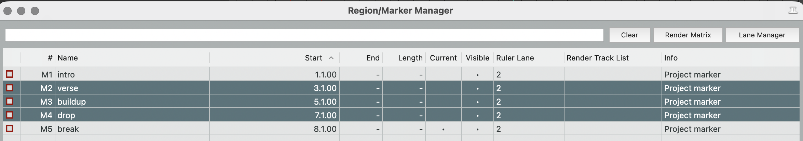
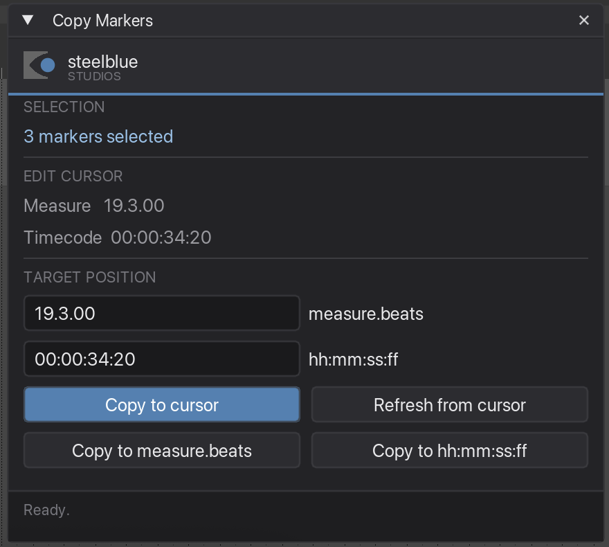
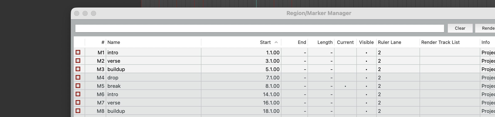

Copy Markers
Copies a set of markers to another position on the timeline — keeping their spacing, their names and their colours.
What it is for
You have programmed a block of cues — say a chorus — and the same block comes back later in the song. Instead of rebuilding it, select those markers once and drop a copy wherever you need it. The distances between them stay exactly as they were.
Step by step
-
Select the markers in the Region/Marker Manager
Open it with View → Region/Marker Manager, then click the markers you want. Shift-click for a range, Cmd-click to pick individual ones. Regions in the selection are ignored — only markers are copied.

Three markers selected: verse, buildup, drop. The marker break below stays untouched. -
Click once into the arrange
This step is easy to miss. As long as the Region/Marker Manager has keyboard focus, it swallows the shortcut: the window will not appear, and your marker selection gets cleared. Click anywhere in the arrange view first, then press the shortcut.
Your selection survives that click — only the blue highlight fades, because macOS dims it while the manager is not the active window. The plugin still reads it correctly.
-
Start the plugin
Run Copy Markers — with the shortcut you assigned, or from the Action List. The window shows how many markers are selected, and where your edit cursor currently sits, in bars and in timecode.
You can leave the window open while you work: change the selection in the manager or move the edit cursor, and the display follows.

The count at the top is read live — it follows what you do in the manager. -
Choose where the copy should go
There are three ways, and you can use whichever fits the moment:
Copy to cursor Copies to wherever the edit cursor is right now — the fastest way. Move the cursor, hit the button. Copy to measure.beats For a musical position: type something like 19.3.00.Copy to hh:mm:ss:ff For a timecode position: type something like 00:00:34:20.Refresh from cursor fills both fields with the current cursor position, so you can nudge the value from there instead of typing it out.
-
Copy
The status line at the bottom confirms what happened. The copies carry the original names and colours.
Green means done. 
The copies M6–M8 arrived at bar 14, 16 and 18 — two bars apart, exactly like the originals at 1, 3 and 5.
Good to know
Spacing is measured from the earliest marker
The first of your selected markers — the earliest one on the timeline, not the first one you clicked — lands exactly on the target position. Everything else keeps its distance to it. So the block arrives as a block.
The selection is read from the manager, not from the arrange
Markers you clicked in the arrange view are not the same selection as the manager's list. If the manager is closed, the plugin falls back to the arrange selection and says so in the window.
It does not need JS_ReaScriptAPI
On REAPER 7.62 and newer, Copy Markers works without that extension. It sorts by timeline position anyway, so it never needs to know in which order you clicked. (Rename selected markers does need it — that one cares about your click order.)